Do The Things That Matter
How today works
- KNOW · 9:20 to 10:00. Icebreaker, SHIFT training, and a 10-minute transition into groups. Know where we are.
- DO · 10:00 to 11:15. Two rounds: groups work S, H, I, then together we Frame, Transform, and decide. Break at 10:40.
- MEASURE · 11:15 to 11:45. Review the decisions, name the owner and the day, and set how we will know it is working.
Follow-Up and Follow-Through
- Without clarity on shared responsibilities, friction can and will grow, and caring fades.
- Every unfinished note or missed lab check-in means someone downstream has to guess.
- Wide gaps in the schedule mean the time exists if we manage it. Follow-through protects trust.
- Today's focus: alignment on our shared processes. Shift our thinking and actions on daily chores and activities. Keep moving the team forward and protect each other.
- Treatment presentations and front desk considerations come next week, with the front desk team.
Pass the Pile
- Pick a number from 1 to 10. Closest number wins and stands in the middle of the group.
- The question: name the heaviest thing you could personally carry. No explaining yet.
- The goal: get rid of your virtual item as fast as you can.
- How: say something nice about the person on your right, then hand your virtual item to the person in the middle.
SHIFT: how we talk about any problem
"What is happening? Facilitators name the items."
"What is helping us do this well? What is not helping?"
"What is unspoken and unseen? Where is it costing us, personally and professionally?"
"What are our options? Explore everything from the absurd to the real."
"How do we define done? Then say out loud how it will feel when it is done."
Gaps in our system
- Daily prep varies. No single standard for what "ready" means.
- Room prep delays. Patients seated 20 to 30 minutes late in about 5 of 10 procedures.
- Incomplete clinical notes. The front desk has to guess a patient's status.
- Lab case check-in. The two-days-ahead check breaks down.
- Task ownership. Owners need a way to say when they are out of time.
- Process drift. Our consistency protocols need a refresh.
- Schedule columns. New team members were not trained, so exams show in production columns two weeks out. Leadership owns that training gap.
Ask specific questions
"How are lab cases going?"
"What percent of lab cases are checked in for the next two days?"
"Which rooms for this morning's first procedures are set up, and who confirmed it?"
Break
Two groups
- Hygiene facilitated by Leny, with Dr. M.
- Dental assistants facilitated by Sammiie, with Dr. Y.
- Each group picks ONE problem. Facilitators run S, H, I in the groups. Then we come back together to Frame, Transform, and decide.
Round 1: Situation, Habits, Insight
"What is happening? Facilitators name the items."
"What is helping us do this well? What is not helping?"
"What is unspoken and unseen? Where is it costing us, personally and professionally?"
Round 1: Frame and Transform, then decisions
"What are our options? Explore everything from the absurd to the real."
"How do we define done? Then say out loud how it will feel when it is done."
"What 2 to 3 decisions do we make? Who owns each, and by when?"
Break
Round 2: Situation, Habits, Insight
"What is happening? Facilitators name the items."
"What is helping us do this well? What is not helping?"
"What is unspoken and unseen? Where is it costing us, personally and professionally?"
Round 2: Frame and Transform, then decisions
"What are our options? Explore everything from the absurd to the real."
"How do we define done? Then say out loud how it will feel when it is done."
"What 2 to 3 decisions do we make? Who owns each, and by when?"
What can be done, and what we want to do
- Each group names the ONE problem it solved.
- What we believe can be done: the steps within our control this week.
- What we would like to do: the bigger changes to work toward.
- Name the owner, the backup, and the day we check it.
Keep it alive: four questions
"What will we measure to ensure we are successful?"
"How will we know everyone is engaged and bought in?"
"How will we keep this in front of us so it does not drift?"
"How will we support each other and protect this from failing?"
Every task gets an owner, a backup, and a deadline
- Owner: the role that makes sure it happens.
- Backup: who covers when the owner is out.
- Deadline: by when, and how we will know it is done.
- Owners say so early when they are out of time.
- Load check: stand on the 1 to 5 line (1 = a few carry most of it, 5 = we share it evenly). Where do we stand now?
- Name one task you carry that few people see, and one you could take off someone else's plate.